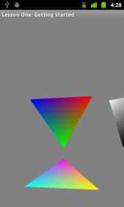

This is the first tutorial on using OpenGL ES 2 on Android. In this lesson, we’re going to go over the code step-by-step, and look at how to create an OpenGL ES 2 context and draw to the screen. We’ll also take a look at what shaders are and how they work, as well as how matrices are used to transform the scene into the image you see on the screen. Finally, we’ll look at what you need to add to the manifest to let the Android market know that you’re using OpenGL ES 2.
Prerequisites
Before we begin, you’ll want to make sure you have the following tools installed on your machine:
Unfortunately, the Android emulator does not support OpenGL ES 2, so you’ll need access to an actual Android device in order to run the tutorial. The Android Emulator now supports OpenGL ES 2 in recent versions of the Android SDK. Most recent devices should also support OpenGL ES 2 these days, so all you need to do is enable developer mode and hook the phone up to your machine.
Assumptions
The reader should be familiar with Android and Java on a basic level. The Android Tutorials are a good place to start.
Getting started
We’ll go over all of the code below and explain what each part does. You can copy the code on a segment by segment basis by creating your own project, or you can download the completed project at the end of the lesson. Once you have the tools installed, go ahead and create a new Android project in Eclipse. The names don’t matter, but for the lesson I will be referring to the main activity as LessonOneActivity.
Let’s take a look at the code:
/** Hold a reference to our GLSurfaceView */private GLSurfaceView mGLSurfaceView; |
The GLSurfaceView is a special view which manages OpenGL surfaces for us and draws it into the Android view system. It also adds a lot of features which make it easier to use OpenGL, including but not limited to:
- It provides a dedicated render thread for OpenGL so that the main thread is not stalled.
- It supports continuous or on-demand rendering.
- It takes care of the screen setup for you using EGL, the interface between OpenGL and the underlying window system.
The GLSurfaceView makes setting up and using OpenGL from Android relatively painless.
@Overridepublic void onCreate(Bundle savedInstanceState){ super.onCreate(savedInstanceState); mGLSurfaceView = new GLSurfaceView(this); // Check if the system supports OpenGL ES 2.0. final ActivityManager activityManager = (ActivityManager) getSystemService(Context.ACTIVITY_SERVICE); final ConfigurationInfo configurationInfo = activityManager.getDeviceConfigurationInfo(); final boolean supportsEs2 = configurationInfo.reqGlEsVersion >= 0x20000; if (supportsEs2) { // Request an OpenGL ES 2.0 compatible context. mGLSurfaceView.setEGLContextClientVersion(2); // Set the renderer to our demo renderer, defined below. mGLSurfaceView.setRenderer(new LessonOneRenderer()); } else { // This is where you could create an OpenGL ES 1.x compatible // renderer if you wanted to support both ES 1 and ES 2. return; } setContentView(mGLSurfaceView);} |
The onCreate() of our activity is the important part where our OpenGL context gets created and where everything starts happening. In our onCreate(), the first thing we do after calling the superclass is creating our GLSurfaceView. We then need to figure out if the system supports OpenGL ES 2. To do this, we get an ActivityManager instance which lets us interact with the global system state. We can then use this to get the device configuration info, which will tell us if the device supports OpenGL ES 2.
Once we know if the device supports OpenGL ES 2 or not, we tell the surface view we want an OpenGL ES 2 compatible surface and then we pass in a custom renderer. This renderer will be called by the system whenever it’s time to adjust the surface or draw a new frame. We can also support OpenGL Es 1.x by passing in a different renderer, though we would need to write different code as the APIs are different. For this lesson we’ll only look at supporting OpenGL ES 2.
Finally, we set the content view to our GLSurfaceView, which tells Android that the activity’s contents should be filled by our OpenGL surface. To get into OpenGL, it’s as easy as that!
@Overrideprotected void onResume(){ // The activity must call the GL surface view's onResume() on activity onResume(). super.onResume(); mGLSurfaceView.onResume();}@Overrideprotected void onPause(){ // The activity must call the GL surface view's onPause() on activity onPause(). super.onPause(); mGLSurfaceView.onPause();} |
GLSurfaceView requires that we call its onResume() and onPause() methods whenever the parent Activity has its own onResume() and onPaused() called. We add in the calls here to round out our activity.
Visualizing a 3D world
In this section, we’ll start looking at how OpenGL ES 2 works and how we can start drawing stuff onto the screen. In the activity we passed in a custom GLSurfaceView.Renderer to the GLSurfaceView, which will be defined here. The renderer has three important methods which will be automatically called by the system whenever events happen:
- public void onSurfaceCreated(GL10 glUnused, EGLConfig config)
- This method is called when the surface is first created. It will also be called if we lose our surface context and it is later recreated by the system.
- public void onSurfaceChanged(GL10 glUnused, int width, int height)
- This is called whenever the surface changes; for example, when switching from portrait to landscape. It is also called after the surface has been created.
- public void onDrawFrame(GL10 glUnused)
- This is called whenever it’s time to draw a new frame.
You may have noticed that the GL10 instance passed in is referred to as glUnused. We don’t use this when drawing using OpenGL ES 2; instead, we use the static methods of the class GLES20. The GL10 parameter is only there because the same interface is used for OpenGL ES 1.x.
Before our renderer can display anything, we’ll need to have something to display. In OpenGL ES 2, we pass in stuff to display by specifying arrays of numbers. These numbers can represent positions, colors, or anything else we need them to. In this demo, we’ll display three triangles.
// New class members/** Store our model data in a float buffer. */private final FloatBuffer mTriangle1Vertices;private final FloatBuffer mTriangle2Vertices;private final FloatBuffer mTriangle3Vertices;/** How many bytes per float. */private final int mBytesPerFloat = 4;/** * Initialize the model data. */public LessonOneRenderer(){ // This triangle is red, green, and blue. final float[] triangle1VerticesData = { // X, Y, Z, // R, G, B, A -0.5f, -0.25f, 0.0f, 1.0f, 0.0f, 0.0f, 1.0f, 0.5f, -0.25f, 0.0f, 0.0f, 0.0f, 1.0f, 1.0f, 0.0f, 0.559016994f, 0.0f, 0.0f, 1.0f, 0.0f, 1.0f}; ... // Initialize the buffers. mTriangle1Vertices = ByteBuffer.allocateDirect(triangle1VerticesData.length * mBytesPerFloat) .order(ByteOrder.nativeOrder()).asFloatBuffer(); ... mTriangle1Vertices.put(triangle1VerticesData).position(0); ...} |
So, what’s all this about? If you’ve ever used OpenGL 1, you might be used to doing things this way:
glBegin(GL_TRIANGLES);glVertex3f(-0.5f, -0.25f, 0.0f);glColor3f(1.0f, 0.0f, 0.0f);...glEnd(); |
Things don’t work that way in OpenGL ES 2. Instead of defining points via a bunch of method calls, we define an array instead. Let’s take a look at our array again:
final float[] triangle1VerticesData = { // X, Y, Z, // R, G, B, A -0.5f, -0.25f, 0.0f, 1.0f, 0.0f, 0.0f, 1.0f, ... |
This represents one point of the triangle. We’ve set things up so that the first three numbers represent the position (X, Y, and Z), and the last four numbers represent the color (red, green, blue, and alpha (transparency)). You don’t need to worry too much about how this array is defined; just remember that when we want to draw stuff in OpenGL ES 2, we need to pass it data in chunks instead of passing it in one at a time.
Understanding buffers
// Initialize the buffers. mTriangle1Vertices = ByteBuffer.allocateDirect(triangle1VerticesData.length * mBytesPerFloat) .order(ByteOrder.nativeOrder()).asFloatBuffer(); ... mTriangle1Vertices.put(triangle1VerticesData).position(0); |
We do our coding in Java on Android, but the underlying implementation of OpenGL ES 2 is actually written in C. Before we pass our data to OpenGL, we need to convert it into a form that it’s going to understand. Java and the native system might not store their bytes in the same order, so we use a special set of buffer classes and create a ByteBuffer large enough to hold our data, and tell it to store its data using the native byte order. We then convert it into a FloatBuffer so that we can use it to hold floating-point data. Finally, we copy our array into the buffer.
This buffer stuff might seem confusing (it was to me when I first came across it!), but just remember that it’s an extra step we need to do before passing our data to OpenGL. Our buffers are now ready to be used to pass data into OpenGL.
As a side note, float buffers are slow on Froyo and moderately faster on Gingerbread, so you probably don’t want to be changing them too often.
Understanding matrices
// New class definitions /** * Store the view matrix. This can be thought of as our camera. This matrix transforms world space to eye space; * it positions things relative to our eye. */private float[] mViewMatrix = new float[16];@Overridepublic void onSurfaceCreated(GL10 glUnused, EGLConfig config){ // Set the background clear color to gray. GLES20.glClearColor(0.5f, 0.5f, 0.5f, 0.5f); // Position the eye behind the origin. final float eyeX = 0.0f; final float eyeY = 0.0f; final float eyeZ = 1.5f; // We are looking toward the distance final float lookX = 0.0f; final float lookY = 0.0f; final float lookZ = -5.0f; // Set our up vector. This is where our head would be pointing were we holding the camera. final float upX = 0.0f; final float upY = 1.0f; final float upZ = 0.0f; // Set the view matrix. This matrix can be said to represent the camera position. // NOTE: In OpenGL 1, a ModelView matrix is used, which is a combination of a model and // view matrix. In OpenGL 2, we can keep track of these matrices separately if we choose. Matrix.setLookAtM(mViewMatrix, 0, eyeX, eyeY, eyeZ, lookX, lookY, lookZ, upX, upY, upZ); ... |
Another ‘fun’ topic is matrices! These will become your best friends whenever you do 3D programming, so you’ll want to get to know them well.
When our surface is created, the first thing we do is set our clear color to gray. The alpha part has also been set to gray, but we’re not doing alpha blending in this lesson so this value is unused. We only need to set the clear color once since we will not be changing it later.
The second thing we do is setup our view matrix. There are several different kinds of matrices we use and they all do something important:
- The model matrix. This matrix is used to place a model somewhere in the “world”. For example, if you have a model of a car and you want it located 1000 meters to the east, you will use the model matrix to do this.
- The view matrix. This matrix represents the camera. If we want to view our car which is 1000 meters to the east, we’ll have to move ourselves 1000 meters to the east as well (another way of thinking about it is that we remain stationary, and the rest of the world moves 1000 meters to the west). We use the view matrix to do this.
- The projection matrix. Since our screens are flat, we need to do a final transformation to “project” our view onto our screen and get that nice 3D perspective. This is what the projection matrix is used for.
A good explanation of this can be found over at SongHo’s OpenGL Tutorials. I recommend reading it a few times until you grasp the idea well; don’t worry, it took me a few reads as well!
In OpenGL 1, the model and view matrices are combined and the camera is assumed to be at (0, 0, 0) and facing the -Z direction.
We don’t need to construct these matrices by hand. Android has a Matrix helper class which can do the heavy lifting for us. Here, I create a view matrix for a camera which is positioned behind the origin and looking toward the distance.
Defining vertex and fragment shaders
final String vertexShader = "uniform mat4 u_MVPMatrix; \n" // A constant representing the combined model/view/projection matrix. + "attribute vec4 a_Position; \n" // Per-vertex position information we will pass in. + "attribute vec4 a_Color; \n" // Per-vertex color information we will pass in. + "varying vec4 v_Color; \n" // This will be passed into the fragment shader. + "void main() \n" // The entry point for our vertex shader. + "{ \n" + " v_Color = a_Color; \n" // Pass the color through to the fragment shader. // It will be interpolated across the triangle. + " gl_Position = u_MVPMatrix \n" // gl_Position is a special variable used to store the final position. + " * a_Position; \n" // Multiply the vertex by the matrix to get the final point in + "} \n"; // normalized screen coordinates. |
In OpenGL ES 2, anything we want to display on the screen is first going to have to go through a vertex and fragment shader. The good thing is that these shaders are really not as complicated as they appear. Vertex shaders perform operations on each vertex, and the results of these operations are used in the fragment shaders which do additional calculations per pixel.
Each shader basically consists of input, output, and a program. First we define a uniform, which is a combined matrix containing all of our transformations. This is a constant across all vertices and is used to project them onto the screen. Then we define two attributes for position and color. These attributes will be read in from the buffer we defined earlier on, and specify the position and color of each vertex. We then define a varying, which interpolates values across the triangle and passes it on to the fragment shader. When it gets to the fragment shader, it will hold an interpolated value for each pixel.
Let’s say we defined a triangle with each point being red, green, and blue, and we sized it so that it will take up 10 pixels on the screen. When the fragment shader runs, it will contain a different varying color for each pixel. At one point, that varying will be red, but halfway between red and blue it may be a more purplish color.
Aside from setting the color, we also tell OpenGL what the final position of the vertex should be on the screen. Then we define the fragment shader:
final String fragmentShader = "precision mediump float; \n" // Set the default precision to medium. We don't need as high of a // precision in the fragment shader. + "varying vec4 v_Color; \n" // This is the color from the vertex shader interpolated across the // triangle per fragment. + "void main() \n" // The entry point for our fragment shader. + "{ \n" + " gl_FragColor = v_Color; \n" // Pass the color directly through the pipeline. + "} \n"; |
This is the fragment shader which will actually put stuff on the screen. In this shader, we grab the varying color from the vertex shader, and just pass it straight through to OpenGL. The point is already interpolated per pixel since the fragment shader runs for each pixel that will be drawn.
More information can be found on the OpenGL ES 2 quick reference card.
Loading shaders into OpenGL
// Load in the vertex shader.int vertexShaderHandle = GLES20.glCreateShader(GLES20.GL_VERTEX_SHADER);if (vertexShaderHandle != 0){ // Pass in the shader source. GLES20.glShaderSource(vertexShaderHandle, vertexShader); // Compile the shader. GLES20.glCompileShader(vertexShaderHandle); // Get the compilation status. final int[] compileStatus = new int[1]; GLES20.glGetShaderiv(vertexShaderHandle, GLES20.GL_COMPILE_STATUS, compileStatus, 0); // If the compilation failed, delete the shader. if (compileStatus[0] == 0) { GLES20.glDeleteShader(vertexShaderHandle); vertexShaderHandle = 0; }}if (vertexShaderHandle == 0){ throw new RuntimeException("Error creating vertex shader.");} |
First, we create the shader object. If this succeeded, we’ll get a reference to the object. Then we use this reference to pass in the shader source code, and then we compile it. We can obtain the status from OpenGL and see if it compiled successfully. If there were errors, we can use GLES20.glGetShaderInfoLog(shader) to find out why. We follow the same steps to load the fragment shader.
Linking a vertex and fragment shader together into a program
// Create a program object and store the handle to it.int programHandle = GLES20.glCreateProgram();if (programHandle != 0){ // Bind the vertex shader to the program. GLES20.glAttachShader(programHandle, vertexShaderHandle); // Bind the fragment shader to the program. GLES20.glAttachShader(programHandle, fragmentShaderHandle); // Bind attributes GLES20.glBindAttribLocation(programHandle, 0, "a_Position"); GLES20.glBindAttribLocation(programHandle, 1, "a_Color"); // Link the two shaders together into a program. GLES20.glLinkProgram(programHandle); // Get the link status. final int[] linkStatus = new int[1]; GLES20.glGetProgramiv(programHandle, GLES20.GL_LINK_STATUS, linkStatus, 0); // If the link failed, delete the program. if (linkStatus[0] == 0) { GLES20.glDeleteProgram(programHandle); programHandle = 0; }}if (programHandle == 0){ throw new RuntimeException("Error creating program.");} |
Before we can use our vertex and fragment shader, we need to bind them together into a program. This is what connects the output of the vertex shader with the input of the fragment shader. It’s also what lets us pass in input from our program and use the shader to draw our shapes.
We create a new program object, and if that succeeded, we then attach our shaders. We want to pass in the position and color as attributes, so we need to bind these attributes. We then link the shaders together.
//New class members/** This will be used to pass in the transformation matrix. */private int mMVPMatrixHandle;/** This will be used to pass in model position information. */private int mPositionHandle;/** This will be used to pass in model color information. */private int mColorHandle;@Overridepublic void onSurfaceCreated(GL10 glUnused, EGLConfig config){ ... // Set program handles. These will later be used to pass in values to the program. mMVPMatrixHandle = GLES20.glGetUniformLocation(programHandle, "u_MVPMatrix"); mPositionHandle = GLES20.glGetAttribLocation(programHandle, "a_Position"); mColorHandle = GLES20.glGetAttribLocation(programHandle, "a_Color"); // Tell OpenGL to use this program when rendering. GLES20.glUseProgram(programHandle);} |
After we successfully linked our program, we finish up with a couple more tasks so we can actually use it. The first task is obtaining references so we can pass data into the program. Then we tell OpenGL to use this program when drawing. Since we only use one program in this lesson, we can put this in the onSurfaceCreated() instead of the onDrawFrame().
Setting the perspective projection
// New class members/** Store the projection matrix. This is used to project the scene onto a 2D viewport. */private float[] mProjectionMatrix = new float[16];@Overridepublic void onSurfaceChanged(GL10 glUnused, int width, int height){ // Set the OpenGL viewport to the same size as the surface. GLES20.glViewport(0, 0, width, height); // Create a new perspective projection matrix. The height will stay the same // while the width will vary as per aspect ratio. final float ratio = (float) width / height; final float left = -ratio; final float right = ratio; final float bottom = -1.0f; final float top = 1.0f; final float near = 1.0f; final float far = 10.0f; Matrix.frustumM(mProjectionMatrix, 0, left, right, bottom, top, near, far);} |
Our onSurfaceChanged() is called at least once and also whenever our surface is changed. Since we only need to reset our projection matrix whenever the screen we’re projecting onto has changed, onSurfaceChanged() is an ideal place to do it.
Drawing stuff to the screen!
// New class members /** * Store the model matrix. This matrix is used to move models from object space (where each model can be thought * of being located at the center of the universe) to world space. */ private float[] mModelMatrix = new float[16]; @Override public void onDrawFrame(GL10 glUnused) { GLES20.glClear(GLES20.GL_DEPTH_BUFFER_BIT | GLES20.GL_COLOR_BUFFER_BIT); // Do a complete rotation every 10 seconds. long time = SystemClock.uptimeMillis() % 10000L; float angleInDegrees = (360.0f / 10000.0f) * ((int) time); // Draw the triangle facing straight on. Matrix.setIdentityM(mModelMatrix, 0); Matrix.rotateM(mModelMatrix, 0, angleInDegrees, 0.0f, 0.0f, 1.0f); drawTriangle(mTriangle1Vertices); ...} |
This is where stuff actually get displayed on the screen. We clear the screen so we don’t get any weird hall of mirror effects, and we want our triangles to animate smoothly so we rotate them using time. Whenever you animate something on the screen, it’s usually better to use time instead of framerate.
The actual drawing is done in drawTriangle:
// New class members/** Allocate storage for the final combined matrix. This will be passed into the shader program. */private float[] mMVPMatrix = new float[16];/** How many elements per vertex. */private final int mStrideBytes = 7 * mBytesPerFloat;/** Offset of the position data. */private final int mPositionOffset = 0;/** Size of the position data in elements. */private final int mPositionDataSize = 3;/** Offset of the color data. */private final int mColorOffset = 3;/** Size of the color data in elements. */private final int mColorDataSize = 4;/** * Draws a triangle from the given vertex data. * * @param aTriangleBuffer The buffer containing the vertex data. */private void drawTriangle(final FloatBuffer aTriangleBuffer){ // Pass in the position information aTriangleBuffer.position(mPositionOffset); GLES20.glVertexAttribPointer(mPositionHandle, mPositionDataSize, GLES20.GL_FLOAT, false, mStrideBytes, aTriangleBuffer); GLES20.glEnableVertexAttribArray(mPositionHandle); // Pass in the color information aTriangleBuffer.position(mColorOffset); GLES20.glVertexAttribPointer(mColorHandle, mColorDataSize, GLES20.GL_FLOAT, false, mStrideBytes, aTriangleBuffer); GLES20.glEnableVertexAttribArray(mColorHandle); // This multiplies the view matrix by the model matrix, and stores the result in the MVP matrix // (which currently contains model * view). Matrix.multiplyMM(mMVPMatrix, 0, mViewMatrix, 0, mModelMatrix, 0); // This multiplies the modelview matrix by the projection matrix, and stores the result in the MVP matrix // (which now contains model * view * projection). Matrix.multiplyMM(mMVPMatrix, 0, mProjectionMatrix, 0, mMVPMatrix, 0); GLES20.glUniformMatrix4fv(mMVPMatrixHandle, 1, false, mMVPMatrix, 0); GLES20.glDrawArrays(GLES20.GL_TRIANGLES, 0, 3);} |
Do you remember those buffers we defined when we originally created our renderer? We’re finally going to be able to use them. We need to tell OpenGL how to use this data using GLES20.glVertexAttribPointer(). Let’s look at the first call.
// Pass in the position informationaTriangleBuffer.position(mPositionOffset);GLES20.glVertexAttribPointer(mPositionHandle, mPositionDataSize, GLES20.GL_FLOAT, false, mStrideBytes, aTriangleBuffer);GLES20.glEnableVertexAttribArray(mPositionHandle); |
We set our buffer position to the position offset, which is at the beginning of the buffer. We then tell OpenGL to use this data and feed it into the vertex shader and apply it to our position attribute. We also need to tell OpenGL how many elements there are between each vertex, or the stride.
Note: The stride needs to be defined in bytes. Although we have 7 elements (3 for the position, 4 for the color) between vertices, we actually have 28 bytes, since each floating point number takes up 4 bytes. Forgetting this step may not cause any errors, but you will be wondering why you don’t see anything on the screen.
Finally, we enable the vertex attribute and move on to the next attribute. A little bit further down we build a combined matrix to project points onto the screen. We could do this in the vertex shader, too, but since it only needs to be done once we may as well just cache the result. We pass in the final matrix to the vertex shader using GLES20.glUniformMatrix4fv() and GLES20.glDrawArrays() converts our points into a triangle and draws it on the screen.
Recap
Whew! This was a big lesson, and kudos to you if you made it all the way through. We learned how to create our OpenGL context, pass shape data, load in a vertex and pixel shader, set up our transformation matrices, and finally bring it all together. If everything went well, you should see something similar to the screenshot on the right.
This lesson was a lot to digest and you may need to go over the steps a few times to understand it well. OpenGL ES 2 takes more setup work to get going, but once you’ve been through the process a few times you’ll remember the flow by the back of your hand.
Publishing on Android Market
When developing apps, we wouldn’t want people unable to run those apps to see them in the market, otherwise we could end up with a lot of bad reviews and ratings when the app crashes on their device. To prevent an OpenGL ES 2 app from appearing on a device which doesn’t support it, you can add this to your manifest:
<uses-feature
android:glEsVersion="0x00020000"
android:required="true" />
This tells the Market that your app requires OpenGL ES 2, and it will hide your app from devices which don’t support it.
Exploring further
Try changing the animation speed, vertex points, or colors, and see what happens!
The full source code for this lesson can be downloaded from the project site on GitHub.
A compiled version of the lesson can also be downloaded directly from the Android Market.
I also recommend looking at the code in ApiDemos, which can be found under the Samples folder in your Android SDK. The code in there helped me out a lot when I was preparing this lesson.
Please don’t hesitate to ask any questions or offer feedback, and thanks for stopping by!
About the book
Android is booming like never before, with millions of devices shipping every day. In OpenGL ES 2 for Android: A Quick-Start Guide, you’ll learn all about shaders and the OpenGL pipeline, and discover the power of OpenGL ES 2.0, which is much more feature-rich than its predecessor.
It’s never been a better time to learn how to create your own 3D games and live wallpapers. If you can program in Java and you have a creative vision that you’d like to share with the world, then this is the book for you.